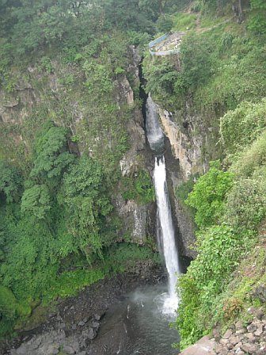

Case Study: La Antigua, Veracruz
At a glance
Primary Partner: Instituto de Ecologia, INECOL
Completed: March 2011 (planned)
Models: Water Supply, Flood Regulation
Maps: Source, sink, use, and flow maps for above ecosystem services
Highlights: Application of ARIES to a watershed for which high quality data and process-based hydrological models are available for integration in the ARIES system. Testing of ARIES’ applicability for ecosystem services-based decision-making in a small watershed where payments for ecosystem services are in place.
Lessons Learned:

Practical application
A majority of people living in ten poor communities in the predominantly forested Gavilanes watershed (located above the city of Coatepec on the eastern slopes of Cofre de Perote volcano) derives their livelihood from small-scale agriculture production, forestry, ranching and an extraction of forest products. The area also provides water to the city of Coatepec and agriculture. The conversion of upstream forest to agriculture and ranching affects biodiversity and hydrological benefits for downstream beneficiaries. The ARIES modeling targets landscape variables related to water provision and regulation (e.g., land cover, land use management practices, location of beneficiaries) to conserve such benefits while allowing production in all sectors of economic activities in the region.
More than 72% of Veracruz’s original forest has been converted to pastureland and agriculture. Still, the remaining natural vegetation harbors the highest levels of biodiversity. Landscape fragmentation and land encroachment occur high into areas of the unique montane cloud forest, one of the most important land cover for water provision in the region. Water resources are severely limited and flooding likely. This has led to unrest over water resources between neighboring states and municipalities with large population centers on their territory.
|
StepsTwo preliminary meetings in Xalapa, Mexico between INECOL faculty and UVM/CI ARIES project were followed by a one-week training session at UVM to preliminarily develop a water supply and flood regulation model. A subsequent visit from INECOL personnel to UVM helped fine-tune the model and data preparation in view of the release of first modeling results in the early Spring of 2011 to an audience of INECOL scientists and local decision-makers. The ecosystem service models rely on state of the art data related to the hydrology of the montane cloud forest in the region. State-funded monitoring projects have produced important datasets relating hydrology to socio-economic benefits. This effort integrates with ongoing work to assess ecosystem services in the region conducted by Conservation International and its partners, with the goal of identifying where natural resources management policies could be most strategic in reducing deforestation and decline of biodiversity. |